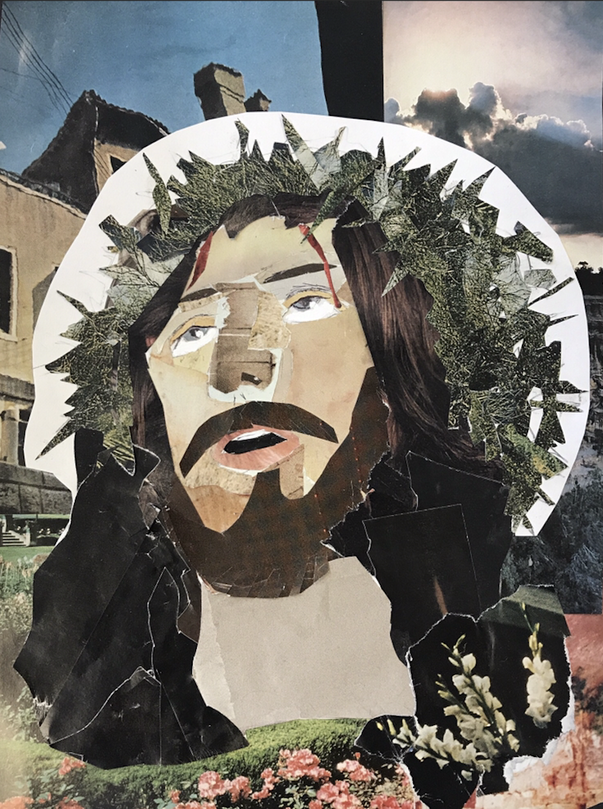

Personal Works
 Jesús De Nazaret
National Geographic Scraps + Glue
8.5 x 11 in
In high school, my art teacher conducted an assignment in which we were all supposed to try out a new medium, collaging. He gave us a stack of National Geographic magazines and asked us to cut up pieces and create collage works of our choice. We had to create 4 different pieces, and 3 out of 4 of them were ones that I was very proud of. This one especially. I worked really hard to get these scraps of pieces together as they are a combination of 200+ scraps of 10 different magazines that were published from 1965-1987. I used an X-acto knife to carve the scraps into curves and sharp edges to create dimension and flow.
Making this collage was not only fun, but very time consuming as it took me 5 hours to get everything in the way i wanted, especially rummaging through different magazines to get the same colors and the right shades to show perspective of light.
When making this piece, i thought of the artists before me and how they portrayed Jesús, I decided to display his background in 4 directions: on the left-upper corner being the streets of Nazareth (Nazaret), one being the clouds of ‘Heaven’ towards the upper-right corner, the bottom left corner being the Gardens of Eden, and the bottom right corner being the purgatory before entering Heaven. This piece was very important to me because in a way I felt closer to my Catholic side, and I made most of my family very proud. To them, they found that the idea of recreating Jesús in this way, was considered a gift from God himself. It was a different way other than my usual mediums of work such as acryilic paint or colored pencils during this time. I felt very proud of myself overall.